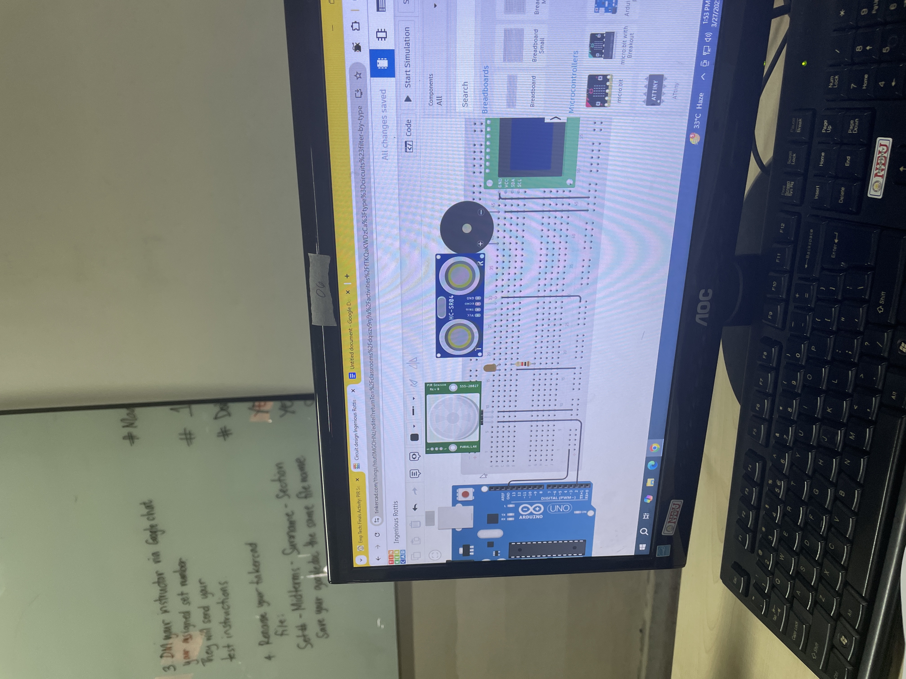
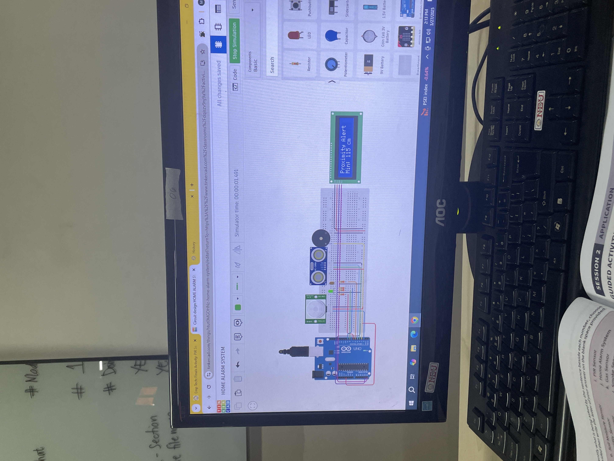

As our finals approached in Empowerment Technologies, we were given a challenging and exciting task — to create a working Home Alarm System using Arduino and Tinkercad! This project was not just about circuits and code; it was about bringing our problem-solving and creativity into the real world of electronics and automation.
Our main objective was to build a circuit that could detect objects (intruders!) and provide visual and audio alerts. We used components like an ultrasonic sensor, an LCD display, and a buzzer. The idea was to simulate how home alarm systems work — detecting motion or proximity and instantly alerting the user.
We worked hard to get the components wired correctly in Tinkercad. It was a great moment when our ultrasonic sensor started detecting objects, and the buzzer would sound based on the proximity!
One of the highlights was figuring out how to use the LCD screen to show messages like "Proximity Alert!" and the actual distance. That moment when everything finally worked felt like magic — except it was code + teamwork + perseverance!
This was more than just a final project — it was a real taste of what engineers and inventors do. It made us appreciate how technology can be applied to improve safety and security in our homes.
Looking back, our Home Alarm System project helped us grow not just technically but also in how we collaborate and solve real-life problems. We may have started as students, but by the end of this project, we truly felt like tech innovators.
Who knows — the next big invention might just come from a classroom like ours! 💡🤖